Space Weirdness Bot archives
2018-7-20 16:50:07
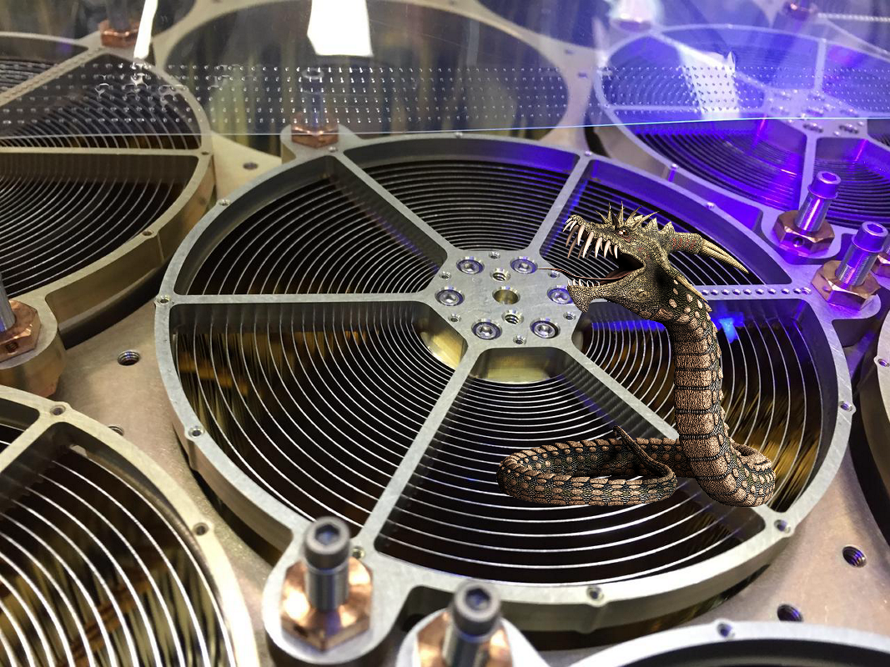
Something Strange ;
Neutron star Interior Composition Explorer (NICER)
2018-7-20 10:50:05
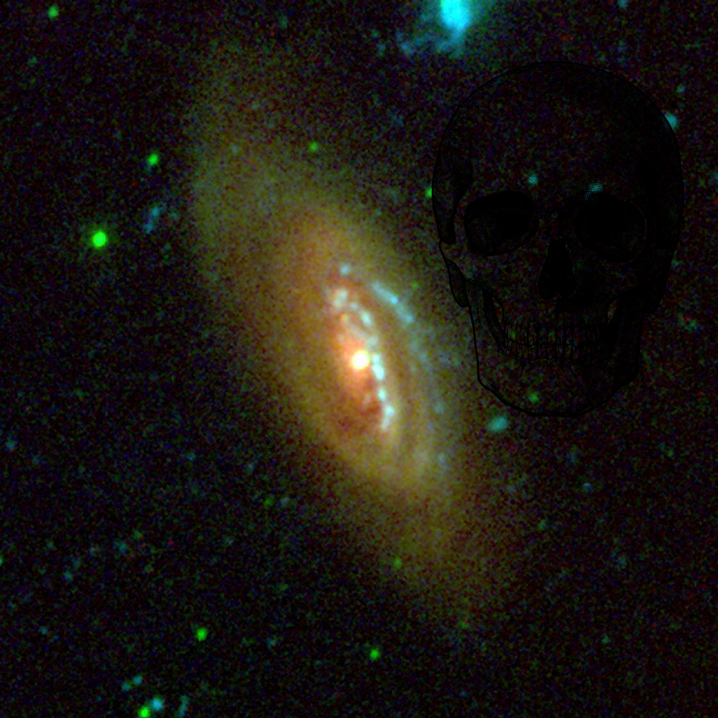
Something Strange on
NGC 4569
2018-7-20 07:50:11
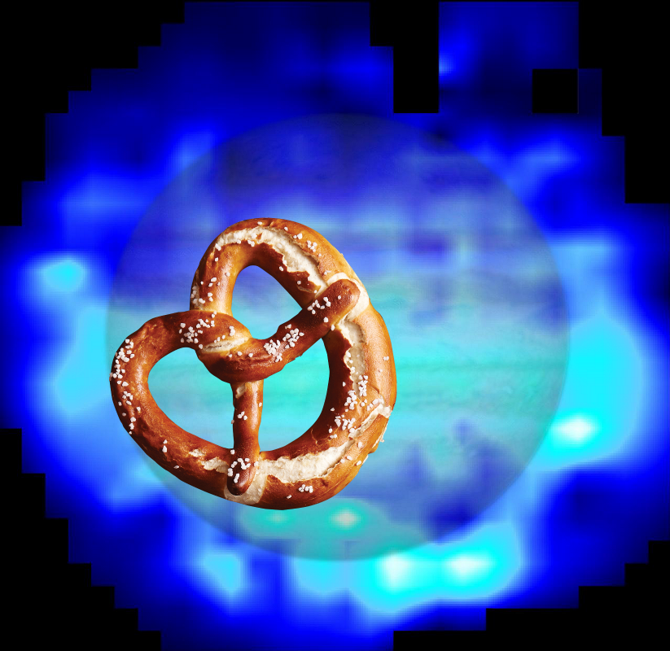
A Mystery @
Distribution of Water in Jupiter Stratosphere
2018-7-20 04:50:06
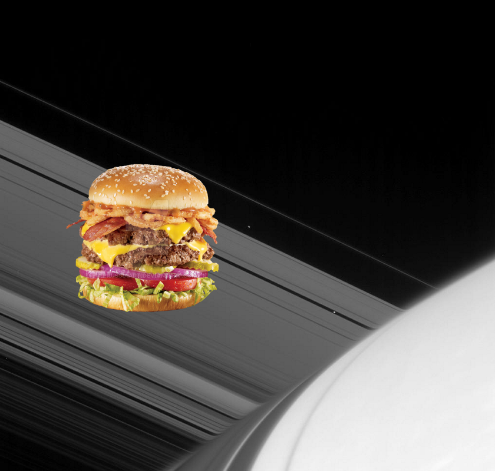
Something Strange @
Emergent Moons
.
2018-7-20 01:50:05
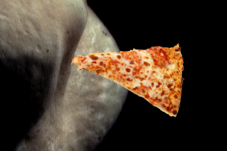
Something Strange ;
Color View of the Saddle
2018-7-19 22:50:06
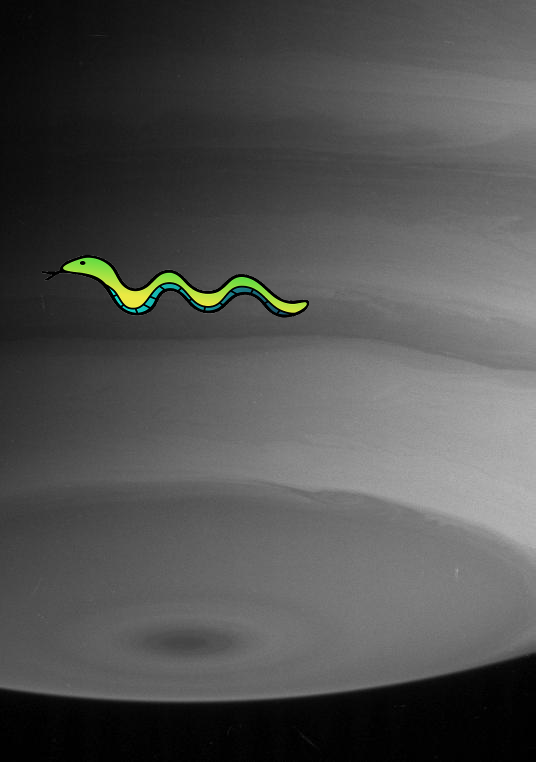
A Mystery +
Saturn Layered Bands
!
2018-7-19 19:50:06
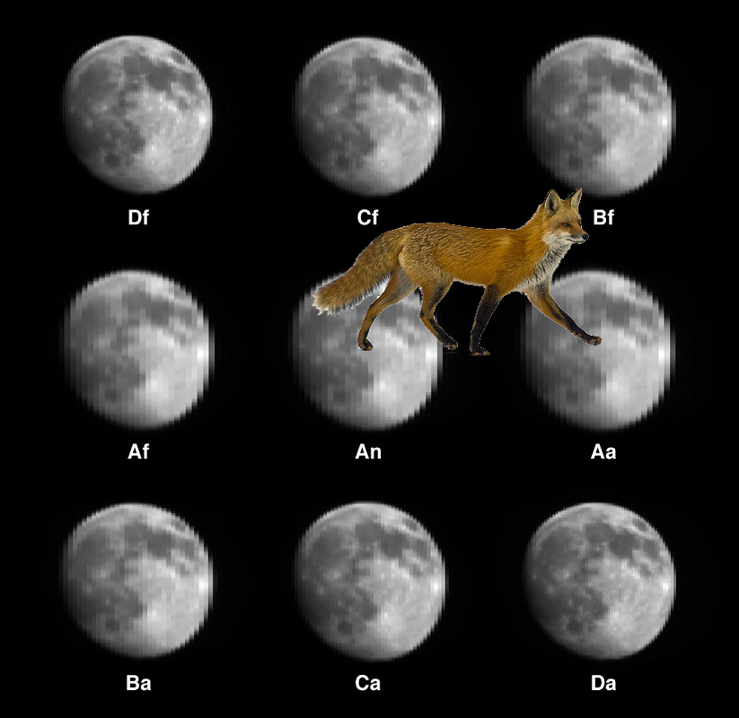
Something Strange +
MISR Views the Moon
.
2018-7-19 16:50:07
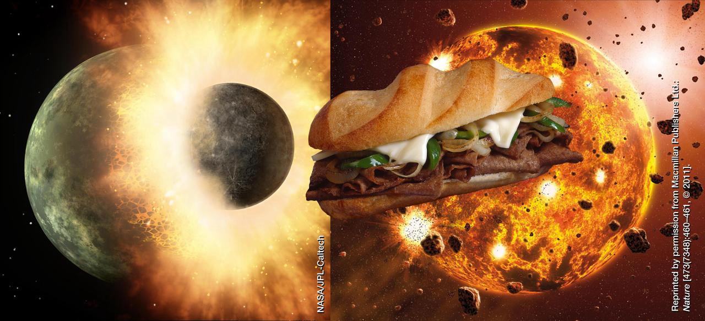
Something Strange @
How Was Mercury Made?
.
2018-7-19 13:50:06
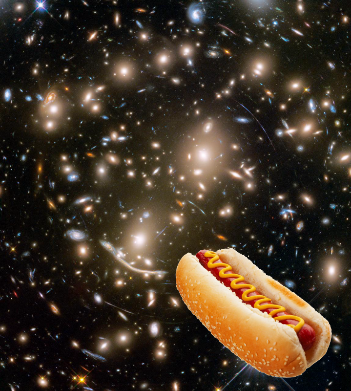
Something Strange –
A Lot of Galaxies Need Guarding in this NASA Hubble View
.
2018-7-19 10:50:06
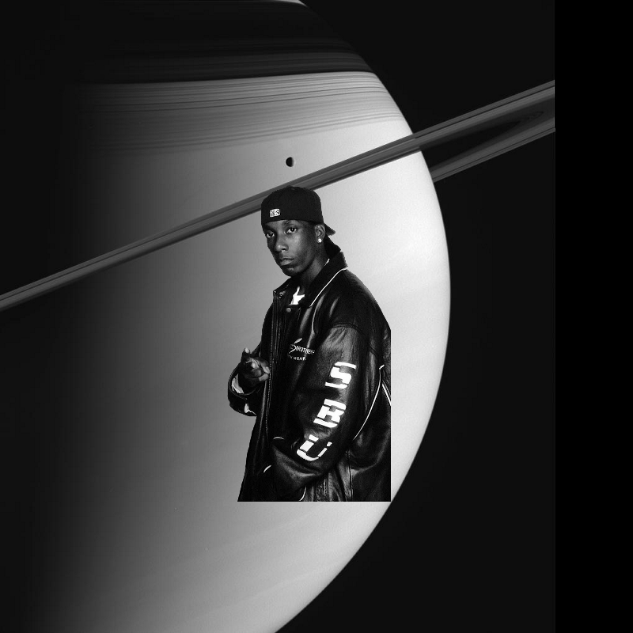
Something Strange on
Saturn and Tethys
2018-7-19 07:50:06
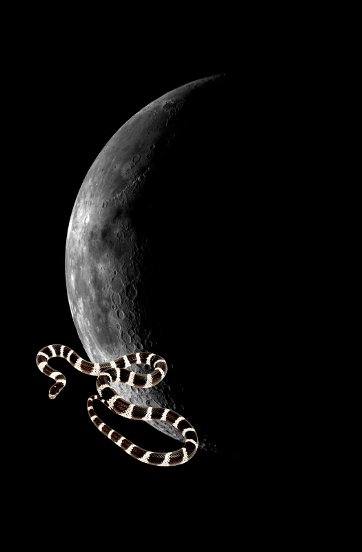
Something Strange –
Moon - Western Near Side
2018-7-19 04:50:04
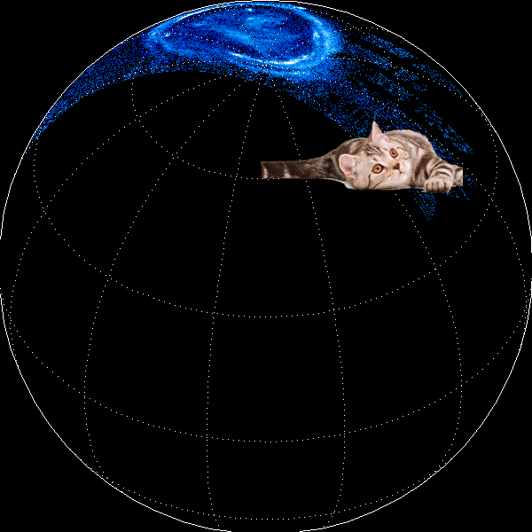
A Mystery +
Jupiter's Northern Lights
2018-7-19 01:50:07
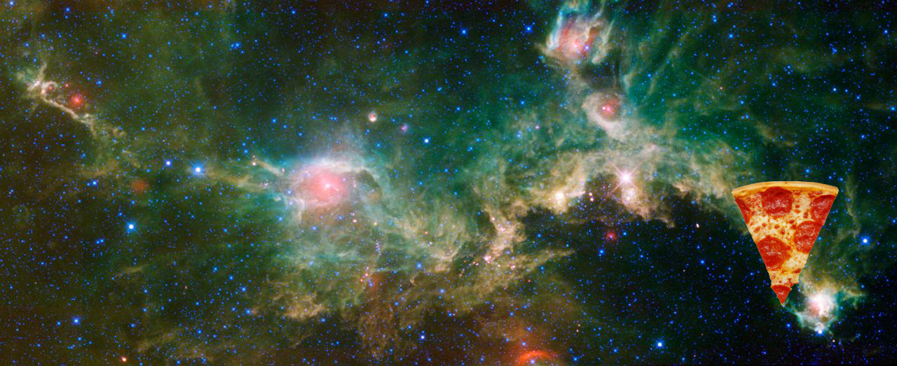
An Unexpected Discovery ;
Seagull Nebula -- Running with the Big Dog
.
2018-7-18 22:50:05
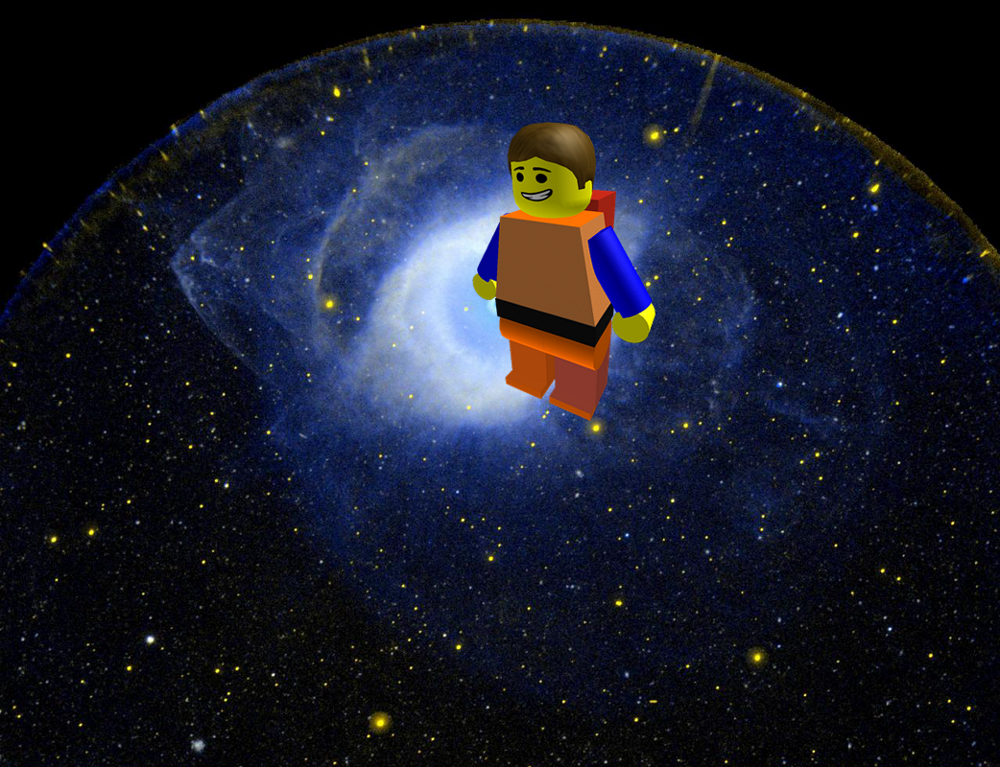
A Mystery –
Planetary Nebula NGC 7293 also Known as the Helix Nebula
!
2018-7-18 19:50:06
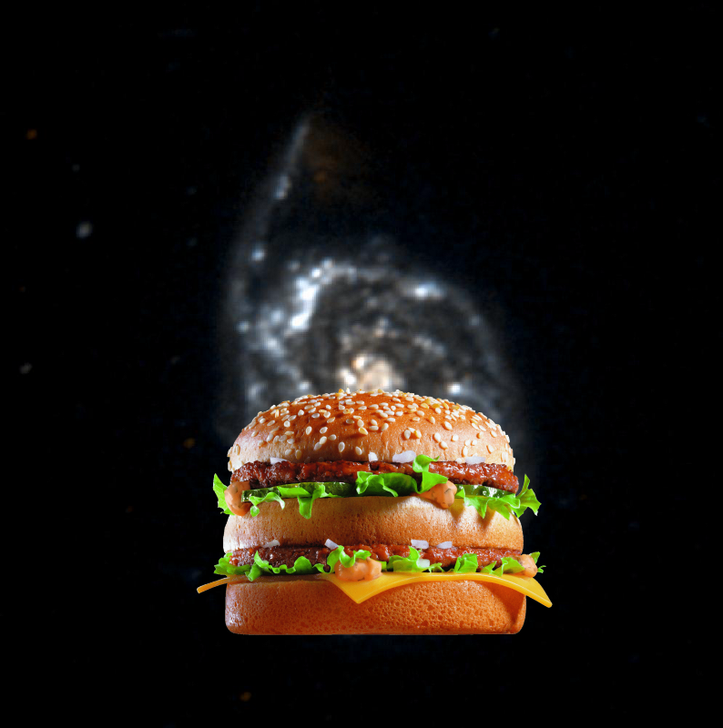
??? +
Galaxy Messier 51
24
|
23
|
22
|
21
|
20
|
19
|
18
|
17
|
16
|
15
|
14
|
13
|
12
|
11
|
10
|
9
|
8
|
7
|
6
|
5
|
4
|
3
|
2
|
1
|
0